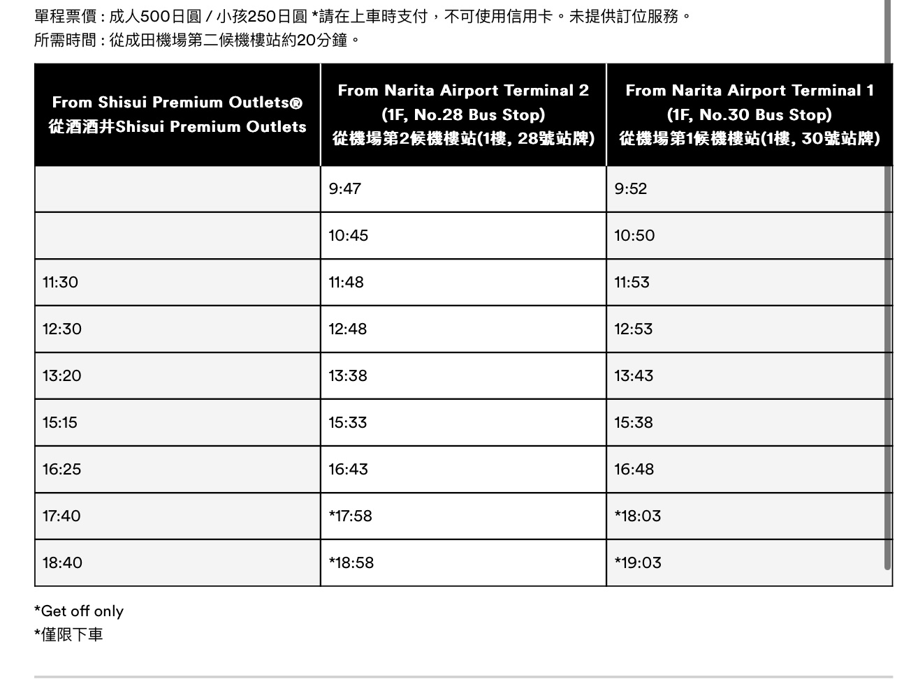

去程
三姊妹航班 日本捷星航空(jetstar)
(TW)桃園機場 02:40 - (JP)成田機場 07:00
- 行李寄放
- 機場巴士班次，一趟15分鐘？搭乘時間 9：47/13：20 
- 酒酒井Outlet
- 13:30左右回到機場等阿華姊妹花
兩老航班 華航
(TW)桃園機場 08:50 - (JP)成田機場 13:15
接到後直接前往住宿點（查要多久會到）
這幾天的家：ReLa Higashi Matsudo

〒270-2225 千葉県松戸市東松戸１丁目３−2 地圖
JR 東松戶站
晚餐：一蘭
地址：

迪士尼樂園(待定)
尚未訂票
早餐
午餐
晚餐
早餐：築地市場(待定)
午餐
晚餐
早餐
午餐
晚餐
這天大概是藥妝店之旅
早餐
午餐
晚餐
早餐
午餐
回程
三姊妹航班 日本捷星航空(jetstar)
(JP)成田機場 22:50 - (TW)桃園機場 7/4 01:40
兩老航班 華航
(JP)成田機場 18:20 - (TW)桃園機場 21:10
還沒排進的行程
- Shibuya sky(待定)(尚未訂票)
- Burger prince
- Shake shack
- Shogun burger
- 抹茶甜點店?冰店?
- 富士山腳下
- 根室花丸
- 原宿一日遊
- 表參道
- 明智神宮
- 中午 Afuri原宿
- 築地市場
- Calbee+薯條店
- 東京車站布丁
- 網卡
- 快速通關